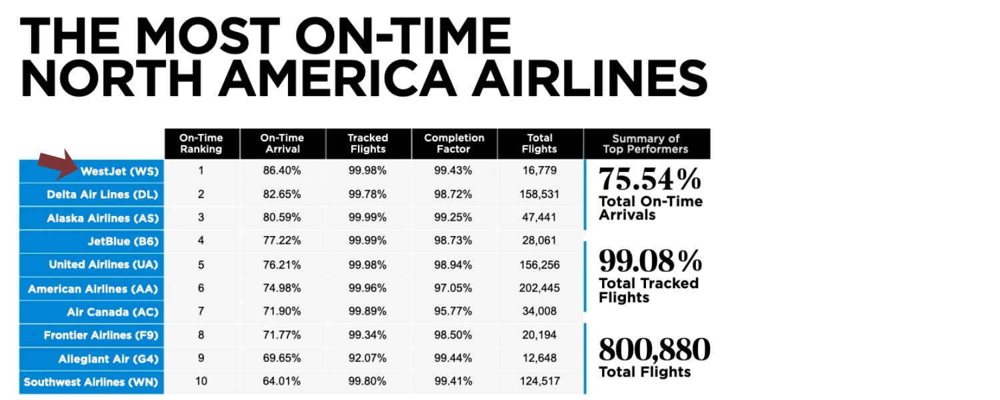
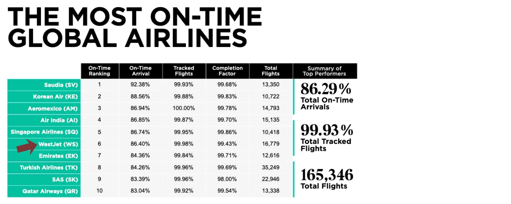
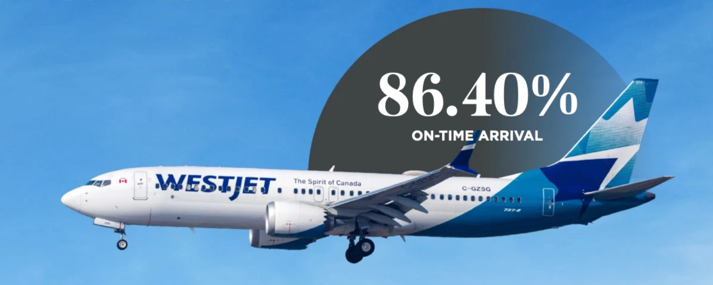

July 14, 2026
Airline NewsWestJet Tops North America for On-Time Performance Again
WestJet is back on top. According to Cirium's latest On-Time Performance Report for June 2026, the Calgary-based carrier flew 86.40% of its flights on time, finishing first in North America for the second month in a row, sixth globally, and as the only Canadian airline in the worldwide top 10. It also led the continent for the entire second quarter, a first for the airline.
I covered WestJet's May result a few weeks back, so seeing the streak carry into June is a satisfying follow-up. Here's what the June numbers show and why they're worth a closer look.
Cover image sourced from WestJet.
First in North America, Again

Source: Cirium On-Time Performance Monthly Report, June 2026.
That result put WestJet ahead of every other carrier on the continent for June. Delta, Alaska, and JetBlue rounded out the North American top four at 82.65%, 80.59%, and 77.22% respectively, while Air Canada came in seventh in the region at 71.90%. WestJet's 86.40% landed almost four percentage points clear of the next airline on the list, which is a wide margin at this level.
The supporting numbers hold up too. WestJet posted a completion factor of 99.43%, meaning almost none of its scheduled flights were cancelled, across nearly 17,000 flights in the month. That's reliability at real scale rather than a light month flattering the stats.
Sixth in the World

Source: Cirium On-Time Performance Monthly Report, June 2026.
On the global list, WestJet placed sixth, one spot better than the seventh-place finish it recorded in May. It shared the top 10 with names like Saudia, Korean Air, Singapore Airlines, and Emirates, which is strong company to keep when the measure is operational reliability. It was again the only Canadian carrier anywhere in the worldwide ranking.
Moving up a spot month over month is a small detail on its own, but it points to a trend rather than a single good month, which is the more encouraging read for anyone flying WestJet this summer.
A Full Quarter on Top

Source: Cirium On-Time Performance Monthly Report, June 2026.
June also closed out something bigger. WestJet led North America for on-time performance across the entire second quarter, which the airline notes is a record for it. Its monthly results climbed steadily through the spring, so June was the high point of a quarter that trended in the right direction rather than a one-off spike.
For context on the June figures themselves, the airline tracked 99.98% of its flights, departed on time 85.70% of the time, and kept 73.29% of flights within their scheduled block time. Cirium counts an arrival as on time when it reaches the gate within 15 minutes of schedule, so these are meaningful measures rather than generous ones.
The 737 Retrofit Finished Early
Source: WestJet.
There was an operational milestone off the runway too. WestJet's teams finished retrofitting the last of its Boeing 737 aircraft that had been configured with 180 seats, standardizing its narrowbody fleet in the process. A consistent cabin layout across the fleet reduces day-to-day complexity, which tends to help with exactly the kind of reliability the Cirium numbers reflect.
The part worth flagging is the timing. The project was originally slated to wrap in the fall, but WestJet completed it partway through June, ahead of the busy summer season. Finishing early means the more standardized fleet is in place for the peak travel months rather than arriving after them.
The Bottom Line
For travellers, the takeaway is much the same as last month, only a little stronger. On-time performance and a high completion factor are two of the better signals of how a trip is likely to go, and WestJet delivered on both for a second straight month and across a full quarter.
One month can be noise. Two months plus a leading quarter is closer to a pattern, and that's the more useful thing to know when you're deciding who to book. Rankings will still move around as schedules, weather, and demand shift through the year, so it's worth keeping perspective, but this is a strong stretch by any read.
If you've got WestJet flights booked this summer, June's numbers are a good sign for the travel days ahead.
Happy travels!
Full report: Cirium On-Time Performance Monthly Report, June 2026.